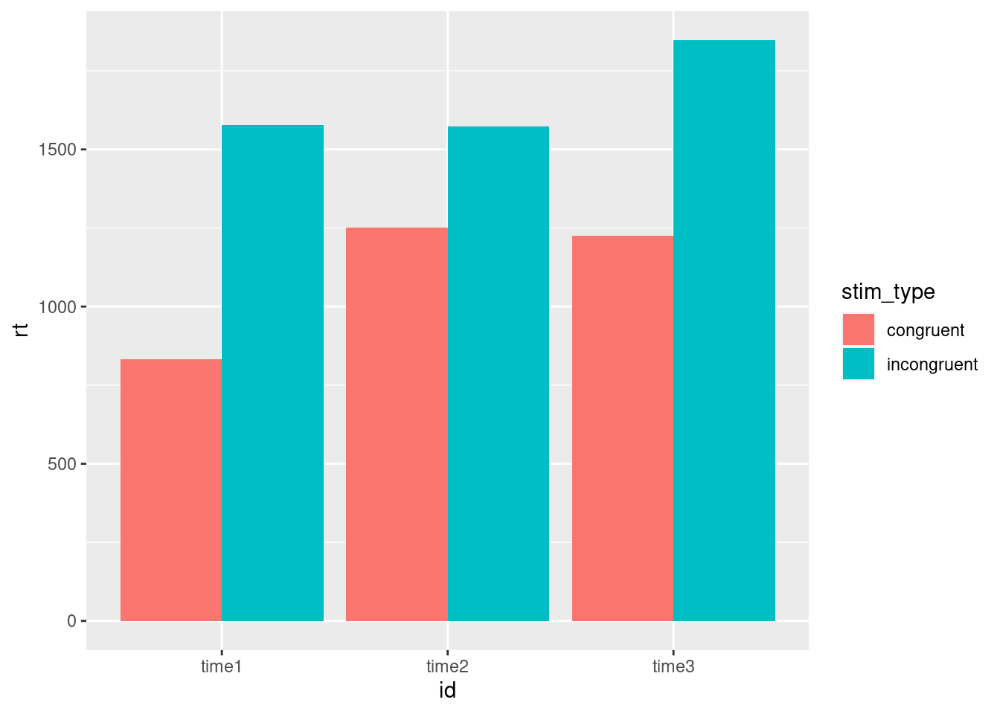

解析の再生可能性を高めるうえで，統計解析自体よりも解析データセット作成が大切です。特に認知課題から得られるデータは，統計解析にかけるまでのデータセットの作成段階で色々と操作が必要です（不要なものを除外したり，複数の参加者のデータを統合したり，変数に処理を加えたりなど）。その際に，ミスが生じがちです。これまで学生指導していて，データ解析でミスが混入する危険性が高いのがここです。この段階でのミスは発覚しにくく，後で追えないこともあり，最もデータ処理上気をつけなくてはいけない部分です。以下では，これらの問題をクリアするために，Rを用いた解析データセットの作成方法について解説します。
最初に，解析データセットの作成では，Excelの使用を禁止します。ExcelもSPSSもマウスを使って操作をしますが，そのような操作はミスが生じやすく，その操作過程の記録が残らないことも多いので，注意が必要です（操作過程が残っていても追いにくい面もあります）。例えば以下のようなことがあります。
こういうことがあると，解析で得られた結果は真実とは違ったものになります。100%ミスせずにExcelでコピー＆ペーストできる保証はありません。
こういうことがあると，解析で得られた結果は真実とは違ったものになります。ソートに限らず，なんらかの処理をエクセル上でしてしまうと，それが本当にただしい処理をしたのか後で確認できなくなることがあります。
認知課題解析用データセットの作成は，以下の原則を守りつつ行う必要があります。
このような条件を満たすもので，心理学科の学生にも使いやすいものとしてはRがあります。解析データセット作成では，Rを使いましょう！以下では，(1)jsPsychを用いたWEB実験で得られたJSONファイルの処理，(2)PsychoPyを用いた実験で得られたcsvファイルの処理について解説します。なお，RやRstudioの基本的な使い方については，R言語の基本と解析梱包で学んでいることを前提とします。
jsPsychを用いたWEB実験のサンプルデータをクリックして，ダウンロードして，自分のパソコンの好きな場所に解凍・展開してください。解凍・展開すると，stroop.jsonというファイルが出てくると思います（国里がstroop課題に３回取り組んだデータです）。RstudioのWorking Directoryにこのstroop.jsonを置くか，stroop.jsonのある場所をRstudioのWorking Directoryにしてください。
library(jsonlite)
library(tidyverse)ダウンロードしたJSONファイルを読み込む際には，以下のように，jsonliteパッケージのfromJSON()関数を使います。データ名は，list形式のdatabaseデータなので，db_listとしました。
db_list <- fromJSON("materials/stroop.json")glimpse(db_list)## List of 3
## $ 2019_8_22_23_48_59_fxlmh9SL:List of 1
## ..$ data:'data.frame': 19 obs. of 10 variables:
## .. ..$ internal_node_id: chr [1:19] "0.0-0.0" "0.0-1.0" "0.0-2.0-0.0" "0.0-2.0-0.1" ...
## .. ..$ key_press : int [1:19] 13 68 68 68 75 68 74 74 75 70 ...
## .. ..$ rt : num [1:19] 390003 7183 706 816 1119 ...
## .. ..$ stimulus : chr [1:19] "<p><span style='font-size:20pt;'>実験にお越しいただき，ありがとうございます!!!</span></p><p>キーボードのキーを"| __truncated__ "<p style='text-align:left'>この課題では, 以下のような色のついた単語を見ていただきます。</p><p style='color:red;"| __truncated__ "<p style='color:red;font-size:60pt;'>赤</p>" "<p style='color:red;font-size:60pt;'>赤</p>" ...
## .. ..$ time_elapsed : int [1:19] 390012 397196 398906 401142 404260 406947 408927 411447 412857 414985 ...
## .. ..$ trial_index : int [1:19] 0 1 2 3 4 5 6 7 8 9 ...
## .. ..$ trial_type : chr [1:19] "html-keyboard-response" "html-keyboard-response" "html-keyboard-response" "html-keyboard-response" ...
## .. ..$ correct : logi [1:19] NA NA TRUE TRUE TRUE TRUE ...
## .. ..$ response : chr [1:19] NA NA "d" "d" ...
## .. ..$ stim_type : chr [1:19] NA NA "congruent" "congruent" ...
## $ 2019_8_22_23_56_32_juStKRbZ:List of 1
## ..$ data:'data.frame': 19 obs. of 10 variables:
## .. ..$ internal_node_id: chr [1:19] "0.0-0.0" "0.0-1.0" "0.0-2.0-0.0" "0.0-2.0-0.1" ...
## .. ..$ key_press : int [1:19] 13 68 68 70 74 70 75 75 68 68 ...
## .. ..$ rt : num [1:19] 2694 2233 554 962 1573 ...
## .. ..$ stimulus : chr [1:19] "<p><span style='font-size:20pt;'>実験にお越しいただき，ありがとうございます!!!</span></p><p>キーボードのキーを"| __truncated__ "<p style='text-align:left'>この課題では, 以下のような色のついた単語を見ていただきます。</p><p style='color:red;"| __truncated__ "<p style='color:red;font-size:60pt;'>赤</p>" "<p style='color:blue;font-size:60pt;'>赤</p>" ...
## .. ..$ time_elapsed : int [1:19] 2696 4930 6491 8290 10571 12205 14231 15730 18340 19780 ...
## .. ..$ trial_index : int [1:19] 0 1 2 3 4 5 6 7 8 9 ...
## .. ..$ trial_type : chr [1:19] "html-keyboard-response" "html-keyboard-response" "html-keyboard-response" "html-keyboard-response" ...
## .. ..$ correct : logi [1:19] NA NA TRUE TRUE TRUE TRUE ...
## .. ..$ response : chr [1:19] NA NA "d" "f" ...
## .. ..$ stim_type : chr [1:19] NA NA "congruent" "incongruent" ...
## $ 2019_8_22_23_57_16_8EygxO3q:List of 1
## ..$ data:'data.frame': 19 obs. of 10 variables:
## .. ..$ internal_node_id: chr [1:19] "0.0-0.0" "0.0-1.0" "0.0-2.0-0.0" "0.0-2.0-0.1" ...
## .. ..$ key_press : int [1:19] 13 68 74 74 70 NA 68 68 70 75 ...
## .. ..$ rt : num [1:19] 1413 1903 1848 603 636 ...
## .. ..$ stimulus : chr [1:19] "<p><span style='font-size:20pt;'>実験にお越しいただき，ありがとうございます!!!</span></p><p>キーボードのキーを"| __truncated__ "<p style='text-align:left'>この課題では, 以下のような色のついた単語を見ていただきます。</p><p style='color:red;"| __truncated__ "<p style='color:green;font-size:60pt;'>赤</p>" "<p style='color:green;font-size:60pt;'>赤</p>" ...
## .. ..$ time_elapsed : int [1:19] 1414 3319 6169 8193 10684 14600 17180 18381 21319 23915 ...
## .. ..$ trial_index : int [1:19] 0 1 2 3 4 5 6 7 8 9 ...
## .. ..$ trial_type : chr [1:19] "html-keyboard-response" "html-keyboard-response" "html-keyboard-response" "html-keyboard-response" ...
## .. ..$ correct : logi [1:19] NA NA TRUE TRUE TRUE FALSE ...
## .. ..$ response : chr [1:19] NA NA "j" "j" ...
## .. ..$ stim_type : chr [1:19] NA NA "incongruent" "incongruent" ...db_df <- as_tibble(db_list, validate = F)
db_df## # A tibble: 1 x 3
## `2019_8_22_23_48_59_fxl… `2019_8_22_23_56_32_juS… `2019_8_22_23_57_16_8E…
## <named list> <named list> <named list>
## 1 <df[,10] [19 × 10]> <df[,10] [19 × 10]> <df[,10] [19 × 10]>db_df2 <- gather(db_df, ID, data)
db_df2## # A tibble: 3 x 2
## ID data
## <chr> <list>
## 1 2019_8_22_23_48_59_fxlmh9SL <df[,10] [19 × 10]>
## 2 2019_8_22_23_56_32_juStKRbZ <df[,10] [19 × 10]>
## 3 2019_8_22_23_57_16_8EygxO3q <df[,10] [19 × 10]>db_df3 <-unnest(db_df2)
db_df3## # A tibble: 57 x 11
## ID internal_node_id key_press rt stimulus time_elapsed
## <chr> <chr> <int> <dbl> <chr> <int>
## 1 2019… 0.0-0.0 13 3.90e5 <p><spa… 390012
## 2 2019… 0.0-1.0 68 7.18e3 <p styl… 397196
## 3 2019… 0.0-2.0-0.0 68 7.06e2 <p styl… 398906
## 4 2019… 0.0-2.0-0.1 68 8.16e2 <p styl… 401142
## 5 2019… 0.0-2.0-0.2 75 1.12e3 <p styl… 404260
## 6 2019… 0.0-2.0-0.3 68 8.34e2 <p styl… 406947
## 7 2019… 0.0-2.0-0.4 74 1.06e3 <p styl… 408927
## 8 2019… 0.0-2.0-0.5 74 1.15e3 <p styl… 411447
## 9 2019… 0.0-2.0-0.6 75 7.51e2 <p styl… 412857
## 10 2019… 0.0-2.0-0.7 70 8.04e2 <p styl… 414985
## # … with 47 more rows, and 5 more variables: trial_index <int>,
## # trial_type <chr>, correct <lgl>, response <chr>, stim_type <chr>db_df4 <-db_df3 %>%
select(ID,trial_index,stim_type,response,correct,rt)
db_df4## # A tibble: 57 x 6
## ID trial_index stim_type response correct rt
## <chr> <int> <chr> <chr> <lgl> <dbl>
## 1 2019_8_22_23_48_59_fxlm… 0 <NA> <NA> NA 3.90e5
## 2 2019_8_22_23_48_59_fxlm… 1 <NA> <NA> NA 7.18e3
## 3 2019_8_22_23_48_59_fxlm… 2 congruent d TRUE 7.06e2
## 4 2019_8_22_23_48_59_fxlm… 3 congruent d TRUE 8.16e2
## 5 2019_8_22_23_48_59_fxlm… 4 incongruent k TRUE 1.12e3
## 6 2019_8_22_23_48_59_fxlm… 5 congruent d TRUE 8.34e2
## 7 2019_8_22_23_48_59_fxlm… 6 incongruent j TRUE 1.06e3
## 8 2019_8_22_23_48_59_fxlm… 7 incongruent j TRUE 1.15e3
## 9 2019_8_22_23_48_59_fxlm… 8 incongruent k TRUE 7.51e2
## 10 2019_8_22_23_48_59_fxlm… 9 incongruent f TRUE 8.04e2
## # … with 47 more rowsdb_df5 <-db_df4 %>%
filter(trial_index !=0) %>% #ウェルカムメッセージは不要
filter(trial_index !=1) %>% #教示は不要
filter(trial_index !=18) #最後の教示も不要
db_df5## # A tibble: 48 x 6
## ID trial_index stim_type response correct rt
## <chr> <int> <chr> <chr> <lgl> <dbl>
## 1 2019_8_22_23_48_59_fxlmh9… 2 congruent d TRUE 706.
## 2 2019_8_22_23_48_59_fxlmh9… 3 congruent d TRUE 816.
## 3 2019_8_22_23_48_59_fxlmh9… 4 incongrue… k TRUE 1119.
## 4 2019_8_22_23_48_59_fxlmh9… 5 congruent d TRUE 834.
## 5 2019_8_22_23_48_59_fxlmh9… 6 incongrue… j TRUE 1056.
## 6 2019_8_22_23_48_59_fxlmh9… 7 incongrue… j TRUE 1151.
## 7 2019_8_22_23_48_59_fxlmh9… 8 incongrue… k TRUE 751.
## 8 2019_8_22_23_48_59_fxlmh9… 9 incongrue… f TRUE 804.
## 9 2019_8_22_23_48_59_fxlmh9… 10 congruent d TRUE 768.
## 10 2019_8_22_23_48_59_fxlmh9… 11 incongrue… j TRUE 1206.
## # … with 38 more rowsdb_df6 <-db_df5 %>%
mutate(correct2 = as.numeric(correct))
db_df6## # A tibble: 48 x 7
## ID trial_index stim_type response correct rt correct2
## <chr> <int> <chr> <chr> <lgl> <dbl> <dbl>
## 1 2019_8_22_23_48_… 2 congruent d TRUE 706. 1
## 2 2019_8_22_23_48_… 3 congruent d TRUE 816. 1
## 3 2019_8_22_23_48_… 4 incongrue… k TRUE 1119. 1
## 4 2019_8_22_23_48_… 5 congruent d TRUE 834. 1
## 5 2019_8_22_23_48_… 6 incongrue… j TRUE 1056. 1
## 6 2019_8_22_23_48_… 7 incongrue… j TRUE 1151. 1
## 7 2019_8_22_23_48_… 8 incongrue… k TRUE 751. 1
## 8 2019_8_22_23_48_… 9 incongrue… f TRUE 804. 1
## 9 2019_8_22_23_48_… 10 congruent d TRUE 768. 1
## 10 2019_8_22_23_48_… 11 incongrue… j TRUE 1206. 1
## # … with 38 more rowsdb_df <- db_list %>%
as_tibble(validate = F) %>% #データフレーム化
gather(ID, data) %>% #ロング化
unnest() %>% #ネストやめる
mutate(correct2 = as.numeric(correct)) %>% #正誤反応はlogical型からnumeric型に
select(ID,trial_index,stim_type,response,correct2,rt) %>% #使う変数選択
filter(trial_index !=0) %>% #ウェルカムメッセージを除外
filter(trial_index !=1) %>% #教示を除外
filter(trial_index !=18) #終了時の教示を除外
db_df## # A tibble: 48 x 6
## ID trial_index stim_type response correct2 rt
## <chr> <int> <chr> <chr> <dbl> <dbl>
## 1 2019_8_22_23_48_59_fxlmh… 2 congruent d 1 706.
## 2 2019_8_22_23_48_59_fxlmh… 3 congruent d 1 816.
## 3 2019_8_22_23_48_59_fxlmh… 4 incongrue… k 1 1119.
## 4 2019_8_22_23_48_59_fxlmh… 5 congruent d 1 834.
## 5 2019_8_22_23_48_59_fxlmh… 6 incongrue… j 1 1056.
## 6 2019_8_22_23_48_59_fxlmh… 7 incongrue… j 1 1151.
## 7 2019_8_22_23_48_59_fxlmh… 8 incongrue… k 1 751.
## 8 2019_8_22_23_48_59_fxlmh… 9 incongrue… f 1 804.
## 9 2019_8_22_23_48_59_fxlmh… 10 congruent d 1 768.
## 10 2019_8_22_23_48_59_fxlmh… 11 incongrue… j 1 1206.
## # … with 38 more rows上記の作業で解析データセットができました。簡単に３名の参加者の条件ごと（ストループ課題での色と文字の一致条件と不一致条件）の正答率と平均反応時間を見てみましょう。tidyverseを使えば，group_byとsummariseで簡単にこういう整理ができます。なお，参加者のIDがちょっと長すぎたので，mutateを使ってIDをtime1,time2,time3に書き換えたidという変数を作って，使っています。このデータは，私が適当に３回回答したものですので，time1~3というidにしました。結果をみると，全体として，正答率はあまり変わりませんが，一致条件(congruent)の方が不一致条件(incongruent)よりも反応時間が短いことがわかりますね。私が適当に３回取り組んだ結果ですが，まあまあきれいな結果ですね。
db_df %>%
mutate(id = ifelse(ID == "2019_8_22_23_48_59_fxlmh9SL", "time1", ifelse(ID == "2019_8_22_23_56_32_juStKRbZ", "time2","time3"))) %>%
group_by(id,stim_type) %>%
summarise(正答率=sum(correct2,na.rm = TRUE)/length(correct2), 平均反応時間=mean(rt,na.rm = TRUE))## # A tibble: 6 x 4
## id stim_type 正答率 平均反応時間
## <chr> <chr> <dbl> <dbl>
## 1 time1 congruent 1 781.
## 2 time1 incongruent 1 1028.
## 3 time2 congruent 1 769.
## 4 time2 incongruent 1 1113.
## 5 time3 congruent 1 888.
## 6 time3 incongruent 0.833 994.平均反応時間をプロットすると以下のような感じです。
db_df %>%
mutate(id = ifelse(ID == "2019_8_22_23_48_59_fxlmh9SL", "time1", ifelse(ID == "2019_8_22_23_56_32_juStKRbZ", "time2","time3"))) %>%
ggplot(aes(x=id,y=rt,fill=stim_type)) +
geom_bar(position = position_dodge(),stat = "identity") ## Warning: Removed 2 rows containing missing values (geom_bar).
自分でjsPsychを使った認知課題を作成して，10名ほどデータを集めてみましょう。その結果をRで読み込んで処理をして，可視化してみましょう。
本研究室では，2020年度からjsPsychを使った認知課題の作成を学ぶようになっていますが，BIOPACやEEGを用いた実験などでは，PsychoPyで実験をしたほうが良いことがあります。PsychoPyでの実験では，参加者ごとにcsvファイルが得られます，以下では，そのようなcsvファイルの処理について解説しています。
PsychoPyを用いた実験のサンプルデータをクリックして，ダウンロードして，自分のパソコンの好きな場所に解凍・展開してください。“Analysis”フォルダ内に“Data”フォルダがあり，その中に，sub01.csvからsub04.csvという名前のcsvファイルが入っているかと思います。sub01.csvからsub04.csvは，逆転学習課題についての４名分の仮想データになります。RstudioのWorking Directoryにこの“Analysis”フォルダを置くか，“Analysis”フォルダのある場所をRstudioのWorking Directoryにしてください。
今回は，すでにフォルダに名前がついていましたが，自分でフォルダ名を付ける場合は，日本語を使用するのは推奨しません。フォルダとファイルと変数名には，英語（日本語のローマ字化でけっこう）を使用してください。
基本的には，Analysisフォルダで解析の前処理や解析は行いますが，一時的にフォルダ移動する必要があります。その時に便利なのが，getwd()とsetwd()です。wdは，作業ディレクトリ(working directory)を意味し，getwdで現在の作業ディレクトリの情報を取得し，setwdで作業ディレクトリを設定します。
以下をRstudioのConsoleにタイプしてみましょう！
getwd()おそらく，さきほど設定したAnalysisフォルダまでのパスが出力されたかと思います（そうじゃない場合は，Rstudioのworking directoryを設定し直してください）。
次に，Analysisフォルダの１つ下の階層にあるDataフォルダに移動してみましょう。以下をRstudioのConsoleにタイプしてみましょう！
workDir <- getwd()
setwd(paste(workDir, "Data", sep = "/"))上記のコードでは，まず１行目で，getwd()で取得した作業ディレクトリのパスをworkDirに入れます。ここで，<-という矢印は，右側のものを左側のものにいれる（代入する）ということを意味します。次に，setwdを使って，workDir（作業ディレクトリのパス）とDataをpasteで結合し（sep=“/”で/で区切るように設定），Analysis下のDataフォルダに作業ディレクトリを変更しています。上記を打ち込んだら，getwd()をタイプして，ちゃんとDataフォルダが作業ディレクトリになっているか確認しましょう！
なお，DataフォルダからAnalysisフォルダに戻るには，以下のsetwd(“..”)が便利です（“..”で１つ上の階層に移動します）。
setwd("..")上記のsetwd(“..”)をRstudioのConsoleに打ちこんでから，getwd()でAnalysisフォルダに戻ってきているか確認をしてみましょう。
もう一度，Dataフォルダに移動します。その上で，list.filse()を使って，フォルダ内のファイル名をリスト化します（そしてfileNamesに入れる）。
workDir <- getwd()setwd(paste(workDir, "Data", sep = "/"))
fileNames <- list.files()Analysisフォルダに“..”で戻ります。
setwd("..")fileNamseの中身を確認します。フォルダに入っているファイル名がfileNamesに格納されているかと思います。
print(fileNames)## [1] "sub01.csv" "sub02.csv" "sub03.csv" "sub04.csv"fileNamesに格納されているファイルの数から参加者数を確認します。lengthでデータの長さ（ここでは，fileNamesに含まれるデータの個数）がわかります。今回は，４個のデータが入っています。
numberSubject <- length(fileNames)
print(numberSubject)## [1] 4では，早速，sub01.csvを読み込んでみましょう！tidyverseに入っているreadrパッケージのread_csv()でcsvファイルが読み込めます。そして，読み込むファイル名は，fileNamesに格納されているのものの１つ目（つまり，sub01）です。
sub01 <- read_csv(paste(workDir, "Data",fileNames[1], sep = "/"))
sub01## # A tibble: 122 x 8
## rt key_press trial_type trial_index time_elapsed internal_node_id
## <dbl> <dbl> <chr> <dbl> <dbl> <chr>
## 1 8693 32 text 0 8697 0.0-0.0
## 2 1194 90 categorize 1 12904 0.0-1.0-0.0
## 3 316 90 categorize 2 16231 0.0-1.0-1.0
## 4 313 90 categorize 3 19552 0.0-1.0-2.0
## 5 352 77 categorize 4 22911 0.0-1.0-3.0
## 6 450 90 categorize 5 26367 0.0-1.0-4.0
## 7 298 90 categorize 6 29672 0.0-1.0-5.0
## 8 305 90 categorize 7 32985 0.0-1.0-6.0
## 9 197 90 categorize 8 36193 0.0-1.0-7.0
## 10 296 90 categorize 9 39495 0.0-1.0-8.0
## # … with 112 more rows, and 2 more variables: correct <lgl>,
## # stimulus <chr>上記のsub01のデータの解析で必要なのは，rt（反応時間）, key_press（押したキー），trial_index(試行番号)，correct（正誤）になります。また，trial_typeでは，categorizeのデータだけが欲しい（textは教示なので，いらない）。このようなデータの整理では，tidyverseのdplyrパッケージを使います。ここで，%>%というパイプ演算子というものがでてきます。これは，%>%の左(or前)のものが，次にくる関数の第一引数に入ることを意味します（例えば，上のlength(fileNames)の場合，length()関数の第一引数は，ファイル名リストのfileNamesになります）。
具体的な操作は以下になります。(1)まず，filterで，trial_typeが“categorize”なものにしぼります。(2)key_pressは，90だと紫の選択，77だと緑の選択になります。90と77だと扱いにくいので，90は1，77は0に変換します。ifelse(key_press == 90, 1,0)を使って，90なら1，それ以外は0になるようにして，mutateの新しい変数rewardを作成します（mutateは，新しい変数を作成する関数です）。(3)correctは，true,falseになるのですが，これも扱いにくいので，trueは1,falseは0にします。as.numeric(as.logical(correct))を使って，論理値にした上で，数値型に変換します。これもmutateを使って新たにrewardという名前を付けます。(4)この段階で，key_press, trial_type, time_elapsed, internal_node_id, correct, stimulusが要らなくなりました。selectを使って，不要な変数にマイナスをつけて除外します。(5)最後に，renameを使ってtrial_indexをnoに変更します。
# データの整理
sub01 <- sub01 %>%
filter(trial_type=="categorize") %>%
mutate(choice = ifelse(key_press == 90, 1,0)) %>%
mutate(reward = as.numeric(as.logical(correct))) %>%
select(-key_press, -trial_type, -time_elapsed, -internal_node_id, -correct, -stimulus) %>%
rename(no = trial_index)
# データの確認
sub01## # A tibble: 120 x 4
## rt no choice reward
## <dbl> <dbl> <dbl> <dbl>
## 1 1194 1 1 1
## 2 316 2 1 1
## 3 313 3 1 0
## 4 352 4 0 0
## 5 450 5 1 1
## 6 298 6 1 1
## 7 305 7 1 1
## 8 197 8 1 1
## 9 296 9 1 0
## 10 346 10 0 1
## # … with 110 more rowsこれで，必要な部分だけきれいに抽出できました。
さて，今度は４名分のデータ（フォルダ内のすべてのデータ）を読み込んで，整理してみましょう。フォルダ内のデータ数分（今回は４）だけ，上記の操作を繰り返します。繰り返す場合は，for文を使います。for文は以下のように書きます。1から“繰り返す回数”までを順番にiに代入しつつ，“繰り返したい操作”を繰り返します。
for(i in 1:繰り返す回数){
繰り返したい操作
}csvファイルを繰り返し読み込むだけでは，それぞれをバラバラに読み込むだけになります。そこで，analysisDataという変数を作って，新たにデータを読み込んで・整理したら，rbind()を使って結合するとう作業をしてみましょう。
# analysisDataの準備
analysisData <- NULL
# 1からnumberSubject分（4回），操作を繰り返す
for(i in 1:numberSubject){
# 読み込んだcsvファイルのデータをtempDataに保存（tempは一時的を意味するtemporaryの省略です）。
tempData <- read_csv(paste(workDir, "Data",fileNames[i], sep = "/"))
# 上記とほぼ同じ操作をする（最後にデータ数分id番号を追加しています）
tempData <- tempData %>%
filter(trial_type=="categorize") %>%
mutate(choice = ifelse(key_press == 90, 1,0)) %>%
mutate(reward = as.numeric(as.logical(correct))) %>%
select(-key_press, -trial_type, -time_elapsed, -internal_node_id, -correct, -stimulus) %>%
rename(no = trial_index) %>%
mutate(id = rep(i,length(rt)))
#データの結合
analysisData = rbind(analysisData, tempData)
}
# データの確認
analysisData## # A tibble: 480 x 5
## rt no choice reward id
## <dbl> <dbl> <dbl> <dbl> <int>
## 1 1194 1 1 1 1
## 2 316 2 1 1 1
## 3 313 3 1 0 1
## 4 352 4 0 0 1
## 5 450 5 1 1 1
## 6 298 6 1 1 1
## 7 305 7 1 1 1
## 8 197 8 1 1 1
## 9 296 9 1 0 1
## 10 346 10 0 1 1
## # … with 470 more rowsこれで，４名分の生データを読み込んだので，今度は，これをcsvファイルとして保存します。csvファイルは，write.csv()を使って，保存できます。
write.csv(analysisData, "analysisData.csv")上記の作業では，for文でのiをIDとしているが，それが実際のどのファイルに対応するのか対応づけできてない。そこで，以下では，上記と同じようなfor文を使って，iとフォルダのファイル名との対応づけをした対応表(idTable)を作成する。また，tidyverseのstringrパッケージを用いると（stringrパッケージはtidyverseを読み込むだけでは読み込まれないので，別途libraryで読み込む），文字列の一部を抽出することもできる。今回は，参加者ID番号にかかわる4~5番目の文字を抽出してみて，それをidTableにいれる。
library(stringr)
idTable <- NULL
for(i in 1:numberSubject){
idTable$csvName[i] <- fileNames[i]
# csvのファイル名の4~5文字目を抽出（つまりsubと.csvの間のID番号の部分）
idTable$csvId[i] <- str_sub(fileNames[i],4,5)
idTable$dataId[i] <- i
}
idTable <- as.data.frame(idTable)
print(idTable)## csvName csvId dataId
## 1 sub01.csv 01 1
## 2 sub02.csv 02 2
## 3 sub03.csv 03 3
## 4 sub04.csv 04 4上記では，フォルダ内のすべてのcsvファイルを読み込んで，その生データを結合して，１つのcsvファイルで保存しました。私個人としては，このように各試行ごとのデータを使って解析した方が良いと考えますが，目的によっては，各試行ごとのデータではなく，全試行における正答率などを参加者ごとに計算した場合もあるかと思います。今回は，各参加者のデータを読み込んで，紫を選んだ比率（1が紫，緑は0）と正答率(correctでは1が正答，0が誤答)を各参加者ごとにsummaryDataに保存してみます。先程ののanalysiDataを作成したコードにちょっとだけ追加をしてみます。
# analysisDataの準備
analysisData <- NULL
# summaryDataの準備
summaryData <- NULL
# 1からnumberSubject分（4回），操作を繰り返す
for(i in 1:numberSubject){
# 読み込んだcsvファイルのデータをtempDataに保存（tempは一時的を意味するtemporaryの省略です）。
tempData <- read_csv(paste(workDir, "Data",fileNames[i], sep = "/"))
# 上記とほぼ同じ操作をする（最後にデータ数分id番号を追加しています）
tempData <- tempData %>%
filter(trial_type=="categorize") %>%
mutate(choice = ifelse(key_press == 90, 1,0)) %>%
mutate(reward = as.numeric(as.logical(correct))) %>%
select(-key_press, -trial_type, -time_elapsed, -internal_node_id, -correct, -stimulus) %>%
rename(no = trial_index) %>%
mutate(id = rep(i,length(rt)))
#データの結合
analysisData = rbind(analysisData, tempData)
# ここまで一緒。ここから，summaryDataの追加作業
summaryData$id[i] <- i
# 紫の選択率
summaryData$purpleRate[i] <- sum(tempData$reward)/length(tempData$reward)
# 正答率
summaryData$correctRate[i] <- sum(tempData$choice)/length(tempData$choice)
}
#データフレーム化と結果の表示
summaryData <- as_data_frame(summaryData)## Warning: `as_data_frame()` is deprecated, use `as_tibble()` (but mind the new semantics).
## This warning is displayed once per session.summaryData## # A tibble: 4 x 3
## id purpleRate correctRate
## <int> <dbl> <dbl>
## 1 1 0.633 0.583
## 2 2 0.483 0.55
## 3 3 0.483 0.567
## 4 4 0.575 0.625summaryDataをcsv形式で保存する。
write.csv(summaryData, "summaryData.csv")自分でPsychoPyを使った認知課題を作成して，10名ほどデータを集めてみましょう。その結果をRで読み込んで処理をして，可視化してみましょう。